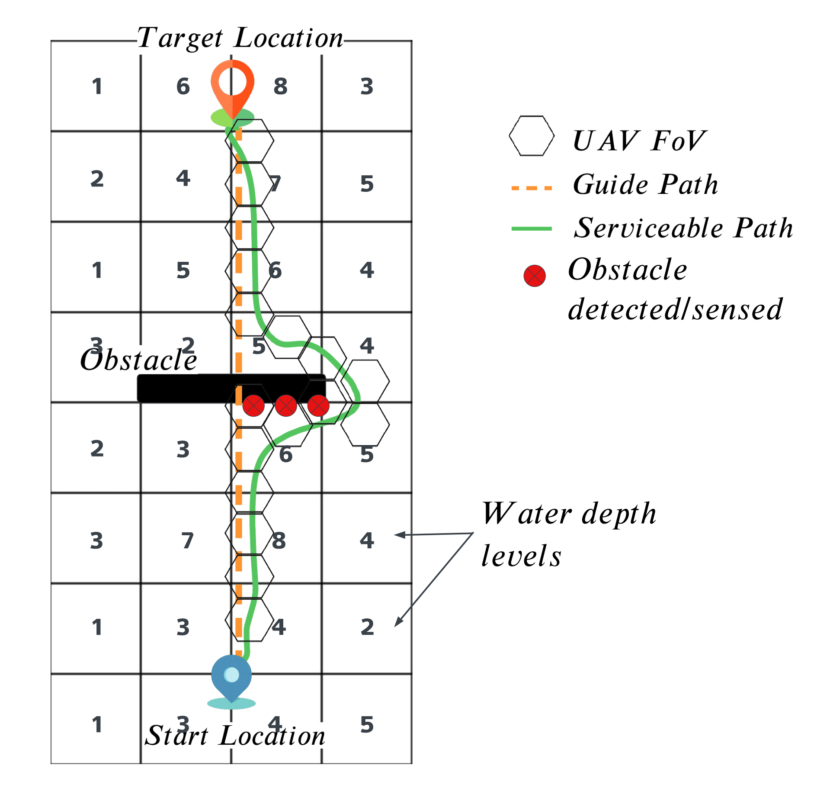
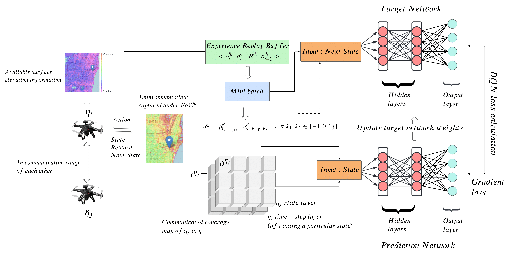
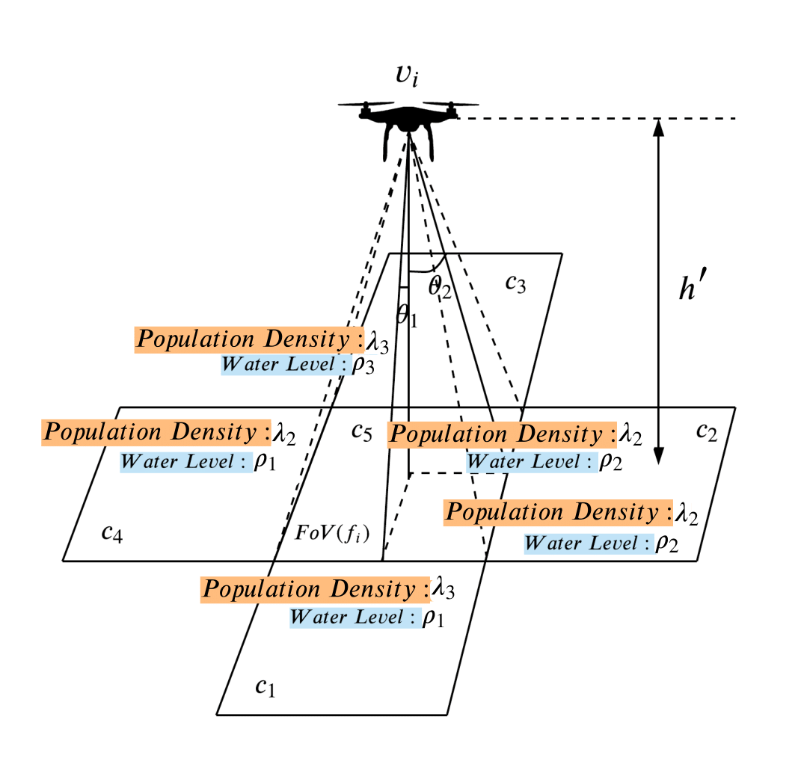
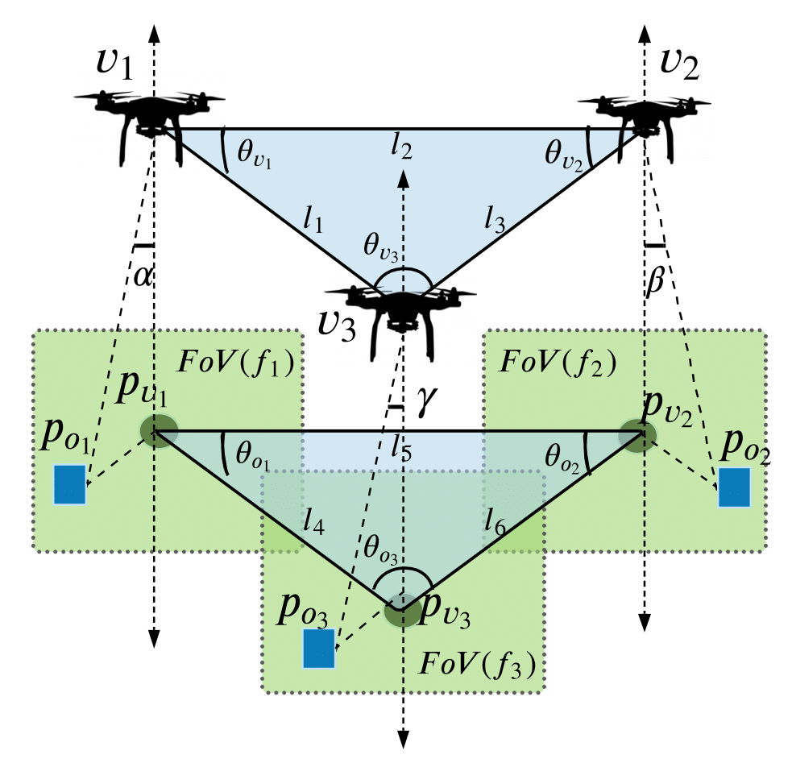

|
Nishant Garg
email (academics):
fpm20026@iiml.ac.in
With over five years of industry, research, and training expertise in the fields of wellbeing, mindfulness,
and business intelligence. In February 2019, I was invited to Harvard University as an international
delegate (HPAIR) for my contribution to the field of social policy. For e.g., designed a curriculum for
well-being as part of a social initiative and implemented it with the government of India (IAS officer) to
reach over 30,000 people. I begin in the research setting, and then transfer the concepts to the actual
world to assess the research's relevance and replicability. This has enabled me to provide various
comprehensive training programmes to corporate, public, and private organisations (Indian army,
national bank, multispecialty hospitals, SME enterprises) with positive effects on employee well-being,
company performance, and the development of a creative culture. In addition, as a result of my
persistent study and creative endeavours, was granted a national art award for a painting on social
peace and one national literary award at an event organised by Cadbury to raise funds for Gujrat relief.
My research interests lie in Multi-agent Reinforcement Learning, specific to UAV based Tracking and Coverage Applications for Security and Disaster Management.
CV |
GitHub |
Google
Scholar |
LinkedIn
|
|
|
News
|
-
27 July 2023Presented a talk on " Optimizing Flood Response: Decentralized Multi-UAV Systems for Autonomous and Guided Area Coverage in Flood-Prone Regions" at India-Dalhousie Student Research Symposium 2023.
-
7 June 2023Paper titled " Decentralized Critical Area Coverage using Multi-UAV System with Guided Explorations during Floods" accepted in IEEE CASE 2023.
-
15 May 2023Paper titled " Real-Time Serviceable Path Planning using UAVs for Waterborne Vehicle Navigation during Floods" accepted in ACM Advances in Robotics 2023, 6th International Conference of the Robotics Society
-
28 March 2023Paper titled " Autonomous Flood Area Coverage using Decentralized Multi-UAV System with Directed Explorations" accepted in ALA Workshop - AAMAS 2023
-
6 Nov 2022Paper titled " Addressing Data Intrinsic Characteristics for Augmentation for Breast Cancer Classification" accepted in CODS-COMAD 2023 under Young Researchers’ Symposium track
-
24 Aug 2022 Paper "Directed Explorations During Flood Disasters Using Multi-UAV System" accepted in IEEE CASE 2022.
-
18 July 2022 Completed my thesis proposal seminar
-
Attended Oxford Machine Learning Summer School 2020.
-
Selected as TCS Research Scholar under TCS Research Scholar Program Cycle 16, 2020.
|
|
Recent Publications
|
|

|
Real-Time Serviceable Path Planning using UAVs for Waterborne Vehicle Navigation during Floods
Nishant Garg, Shashi Shekhar Jha
Advances in Robotics. 6TH International conference of the Robotics Society, 2023
abstract |
bibtex
Autonomous navigation and formation control of multi-UAV systems pose a significant challenge for the robotic systems that operate in partially-observable, dynamic and continuous environments. This paper addresses the problem of multi-UAV cooperative sensing and coverage of a flood-struck region to identify serviceable paths to critical locations for waterborne vehicles (WBV) in real-time. A serviceable path is defined as a location that is obstacle free and has adequate water level for possible movement of WBVs. We develop a deep reinforcement learning model to learn a cooperative multi-UAV policy for real-time coverage of a flooded region. The coverage information gathered by the UAVs captures the presence of obstacles present in the path connecting the start and critical locations given by the shortest Manhattan distance. This coverage information is utilized by the path planning algorithm, i.e., MEA*, to minimize the number of expansion nodes and identify a serviceable path quickly. To conserve energy, UAVs initially follow a guided path to explore the optimal route. If obstacles are encountered, the UAVs search nearby areas for an alternate path to reach the critical location. Experiments are performed over real-world inspired simulated flood environments. The proposed approach, MEA*MADDPG, is compared with other prevalent techniques from the literature. The results highlight the significance of the proposed model as it outperforms other techniques when compared over various performance metrics.
@INPROCEEDINGS{garg_air_2023,
author={Garg, Nishant and Jha, Shashi Shekhar},
booktitle={Advances In Robotics - 6th International Conference of The Robotics Society (AIR 2023), July 5--8, 2023, Ropar, India},
title={Real-Time Serviceable Path Planning using UAVs for Waterborne Vehicle Navigation during Floods},
year={2023},
doi={10.1145/3610419.3610433},
ISBN={978-1-4503-9980-7/23/07}}
|
|

|
Autonomous Flood Area Coverage using Decentralized Multi-UAV System with Directed Explorations
Nishant Garg, Shashi Shekhar Jha
15th Adaptive and Learning Agents Workshop at AAMAS (ALA 2023), 2023
abstract |
bibtex
During floods, access to real-time ground information is of critical importance for disaster response teams. Unmanned Aerial Vehicles (UAVs) can be quickly deployed in such disaster scenarios for gauging the ground situation. In this paper, we present a decentralized multi-UAV control algorithm based on deep reinforcement learning for flood area coverage. The UAVs are tasked to access the risk levels of the flooded regions and autonomously distribute themselves in order to gather ground information from flood areas in a time-sensitive manner. The task is time-sensitive due to the limited battery of the UAVs and the human lives at risk. In our proposed approach, we follow the paradigm of decentralized training and decentralized execution with opportunistic communication wherein each UAV makes individual decisions based on the information captured locally and the information received via intermittent communication with other UAVs. Further, to learn the best-performing control policy, a flood-water flow estimation algorithm called D8 is employed. With D8, we utilize the domain knowledge to generate better exploration strategies for boosting the initial policy gradients in the right direction. Experiments are performed over real-world inspired simulated flood environments. The proposed decentralized multi-UAV control model, dec-DQNC8, is compared with other prevalent techniques from the literature. The results highlight the significance of the proposed model as it outperforms other techniques and moreover, has the optimal performance when evaluated over a test environment.
@INPROCEEDINGS{garg_ala_2023,
author={Garg, Nishant and Jha, Shashi Shekhar},
booktitle={In 15th Adaptive and Learning Agents Workshop (ALA) at the International Conference on Autonomous Agents and Multiagent Systems (AAMAS 2023)},
title={Autonomous Flood Area Coverage using Decentralized Multi-UAV System with Directed Explorations},
year={2023},
url={https://alaworkshop2023.github.io/papers/ALA2023_paper_7.pdf}}
|
|

|
Directed Explorations During Flood Disasters Using Multi-UAV System
Nishant Garg, Shashi Shekhar Jha
18th International Conference on Automation Science and Engineering (IEEE CASE), 2022
abstract |
bibtex
The disaster relief operations during floods require time critical information of the flooded area to save lives. Finding critical regions of the disaster struck area in a limited time frame is crucial for effective relief planning. In this paper, we propose a multi-UAV based system with directed explorations of flooded area to gather time-critical ground information using deep reinforcement learning based controls. We learn an exploration policy for the multi-UAV system with limited battery for autonomous coverage of the flooded region. Further, we integrate D8 flow algorithm that approximates the water flow direction based on image pixel information of a sub-region in the UAVs' exploration strategy. The results show that our proposed method for multi-UAV exploration of flooded area outperforms other methods from the literature. Moreover, the learnt multi-UAV exploration policy is able to generalize to unseen flooded regions without any retraining.
@INPROCEEDINGS{garg_case_2022,
author={Garg, Nishant and Jha, Shashi Shekhar},
booktitle={2022 IEEE 18th International Conference on Automation Science and Engineering (CASE)},
title={Directed Explorations During Flood Disasters Using Multi-UAV System},
year={2022},
volume={},
number={},
pages={2154-2161},
doi={10.1109/CASE49997.2022.9926454}}
|
|

|
On Learning Multi-UAV Policy for Multi-Object Tracking and Formation Control
Prakarsh Kaushik, Nishant Garg, Shashi Shekhar Jha
IEEE 18th India Council International Conference (INDICON), 2021
abstract |
bibtex
Autonomous navigation and formation control of multi-UAV systems poses a significant challenge for the robotic systems that operate in partially-observable, dynamic and continuous environments. This paper addresses the problem of multi-UAV formation control while cooperatively tracking a set of moving objects. The objective of the multi-UAV system is to maintain the moving objects under their joint coverage along with aligning themselves in an optimal formation for maximizing the overall area coverage. We develop a multi-agent reinforcement learning model to learn a cooperative multi-UAV policy for the multi-object tracking and formation control. We design a reward function to encode the objectives of tracking, formation and collision avoidance into the model. The proposed deep reinforcement learning based model is deployed and tested against a baseline controller using the Gazebo simulator. The result indicates that the proposed model is robust against the tracking and alignment errors outperforming the baseline model.
@INPROCEEDINGS{garg_indicon_2021,
author={Kaushik, Prakarsh and Garg, Nishant and Jha, Shashi Shekhar},
booktitle={2021 IEEE 18th India Council International Conference (INDICON)},
title={On Learning Multi-UAV Policy for Multi-Object Tracking and Formation Control},
year={2021},
volume={},
number={},
pages={1-6},
doi={10.1109/INDICON52576.2021.9691567}}
|
|
Teaching
|
-
Reinforcement Learning (CS533/CS543), Autumn Semester (2022,2021) Spring Semester (2023)
Teaching Assistant with Dr Shashi Shekhar Jha
- Artificial Intelligence (CS512), Spring Semester (2022,2021,2020)
Teaching Assistant with Dr Shashi Shekhar Jha
|
|